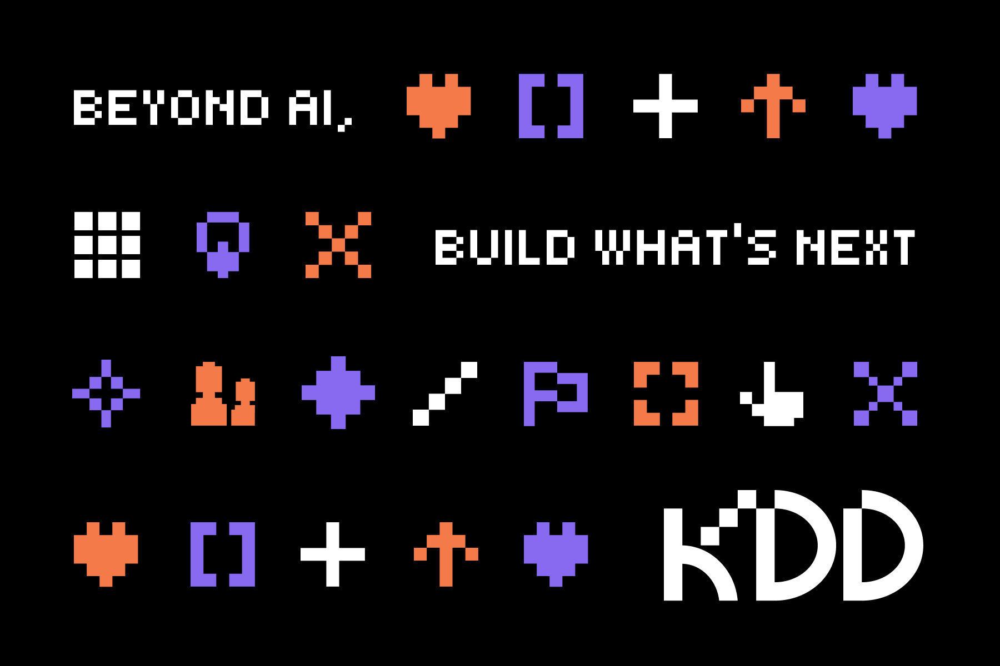

01 · Overview
About the Project
The Community
KDD was founded in 2017 by a Korean developer in Vancouver with one wish: a space where Koreans from different fields could meet, share, and grow together. Today KDD runs regular meetups, mentoring sessions, and an annual conference co-hosted with the Korean Consulate.
My Role
As brand designer, I led the visual identity redesign end to end: defining the brand concept, designing the logo mark, establishing the color and type system, and producing templates for social media, events, and physical merchandise.
Role
Brand Designer
Timeline
2026 · 4 months
Deliverables
Logo · Color · Templates · Merch

02 · Challenge
The Problem
"KDD had no unified visual identity. Every event, post, and printed piece looked different. This was especially critical ahead of their annual flagship event with the Korean Consulate."
01
Inconsistent Logo Usage
No defined rules for how the logo appeared across web, social, and print. This resulted in stretched, recolored, and misused versions everywhere.
02
No Color System
Event flyers used different palettes each time. There was no primary color, no secondary palette, and no rules for combination.
03
Typography Inconsistency
Korean and English type were treated separately with no hierarchy rules, causing visual noise across every touchpoint.